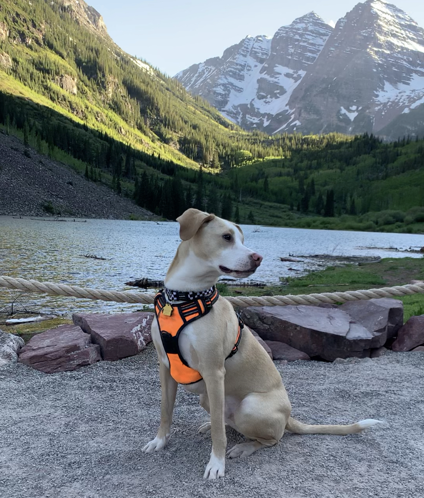

We met in the Fall of 2017 at Clemson University. We were enrolled in the same Master's program at Clemson University studying to be counselors. We were paired in a group and had to record and share videos of us counseling kids with each other. Since April was working full time she did the 2-year program in 3-years which meant all of her friends graduated before she started her third year. Because of this, she didn't really know anyone in my cohort except for me. Since I had no friends it was a match made in heaven.
After class one day we both went to Tiger Town Tavern to get a beer and complain about grad school. This started our friendship and we began hanging out and car-pooling to class together. Toward the end of the program, we knew we'd be looking for jobs so we started looking in the D.C. area and Denver. We both accepted jobs in Denver - yay mountains!
We moved to Denver in July 2019 and loved it. We loved to explore the mountains in our time off of work and trying new restaurants like Bull & Bush. We vacationed to Steamboat Springs, CO and it was amazing - the hot springs, the snow, and the scenery were all really magical. Another town we really fell in love with is Fort Collins. We initially went for a concert, but it quickly became a favorite place to visit. We enjoyed vacationing on our school breaks. As such, we were incredibly excited for our meticulously planned Pacific coast highway trip for Spring Break 2020.
We started by flying to Portland, OR and then driving to April's favorite plce - Cannon Beach. We spent a few great days there and then drove down the coast toward California stopping at various sites. The day we got to California, however, the entire state shut down due to COVID. We made the executive decision to just drive straight back to Denver in what was probably the worst 19 hour road trip ever.
Once we got back to Denver, COVID was not so bad for us in the sense that we worked from home and made a ton of friends in our apartment complex. This eased the hardship of not being able to go anywere. Additionally, while April was in South Carolina staying with her parents she adopted little baby Hugo!
